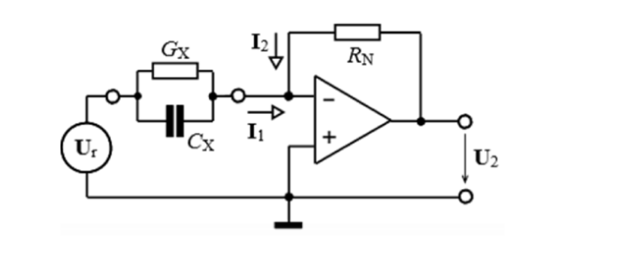
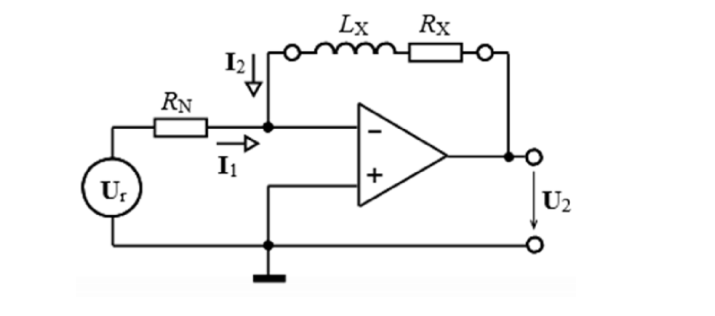
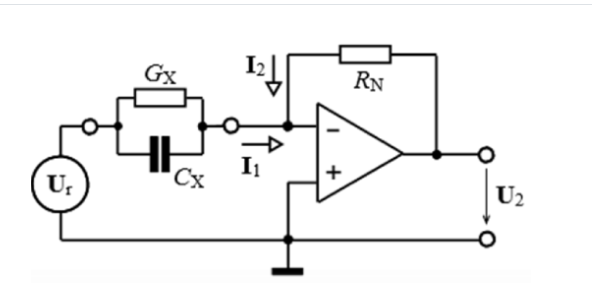

Schéma viz (Měření malých odporů — čtyřvodičová Kelvinova metoda).
Princip: Zdroj proudu je připojen k $R_X$ dvěma vnějšími „proudovými" svorkami; voltmetr je připojen dvěma vnitřními „napěťovými" svorkami přímo na tělese rezistoru. Proudovými přívody teče celý měřicí proud a vzniká na nich úbytek napětí (chyba), ten ale voltmetr neměří. Napěťovými přívody teče zanedbatelný proud (díky velkému $R_V$), takže na nich nevzniká úbytek a měří se čistě napětí na $R_X$.
Relativní standardní nejistota — zákon o šíření nejistot pro podíl:
$$u_r(R_X) \;=\; \sqrt{\,u_r^2(U)+u_r^2(I)\,}$$Metoda komutace proudu: změříme napětí postupně při kladném proudu ($U^{+}$) a po přepólování zdroje ($U^{-}$). Termoelektrické napětí $U_T$ má v obou měřeních stejné znaménko, kdežto užitečný úbytek $R_X I$ změní znaménko spolu s proudem. V signed rozdílu se proto $U_T$ vyruší:
$$\boxed{\;U_{R_X} \;=\; \dfrac{U^{+} - U^{-}}{2}\;\;\Rightarrow\;\;R_X \;=\; \dfrac{U_{R_X}}{I}\;}$$Velké odpory (řádově $\text{G}\Omega$) měříme zdrojem napětí a citlivým mikroampérmetrem. Klíčové je stínění — kovový kryt rezistoru a svorka Guard jsou připojeny na společnou zem mezi zdrojem a ampérmetrem. Princip stínění viz .
Schéma viz (převodník R→U pro střední odpory) a (pro malé odpory).
Invertující zapojení s OZ. Referenční napětí $U_r$ je přivedeno přes známý normálový rezistor $R_N$ na invertující vstup, měřený odpor $R_X$ je ve zpětné vazbě.
Vstupní proud do invertujícího vstupu OZ je nulový, přes $R_N$ tedy teče celý proud:
$$I \;=\; \dfrac{U_r}{R_N}\,, \qquad U_2 \;=\; -\,I\,R_X \;=\; -\,U_r\,\dfrac{R_X}{R_N}$$ $$\boxed{\;R_X \;=\; -\,\dfrac{U_2}{U_r}\,R_N\;}$$Pro reálný OZ se přidává člen od vstupního klidového proudu $I_{1N}$, viz .
Schémata viz (Ohmova metoda).
| Velký $R_X$ — voltmetr „před" ampérmetrem | Malý $R_X$ — voltmetr přímo na $R_X$ |
|---|---|
| Voltmetr měří úbytek na A-metru navíc. Chybu způsobuje $R_A$. Korekce: $\;R_X = U_V/I_A - R_A$ |
A-metr měří součet proudů (přes $R_X$ i $R_V$). Chybu způsobuje konečný $R_V$. Korekce: $\;R_X = U_V / (I_A - U_V/R_V)$ |
Nejistota $R_A$ se obvykle zanedbává — korekční člen je malý vůči naměřené hodnotě.
Schéma viz (Wheatstoneův můstek) a (vyhodnocení tenzometrů).
Obecný vztah (napájení napětím $U_{nap}$):
$$U_{diag} \;=\; U_{nap}\!\left(\dfrac{R_1}{R_1+R_2} - \dfrac{R_3}{R_3+R_4}\right)$$Podmínka rovnováhy: $R_1\,R_4 = R_2\,R_3 \;\Rightarrow\; U_{diag}=0$.
Pro malé rozvážení ($R_1=R_0+\Delta R$, ostatní $=R_0$, napájení napětím):
$$\boxed{\;U_{diag} \;\approx\; \dfrac{U_{nap}}{4}\cdot\dfrac{\Delta R}{R_0}\;}$$Obecně pro 4 aktivní senzory (sousední ramena s opačným znaménkem):
$$U_{diag} \;\approx\; \dfrac{U_{nap}}{4}\!\left(\dfrac{\Delta R_1}{R_0} - \dfrac{\Delta R_2}{R_0} + \dfrac{\Delta R_4}{R_0} - \dfrac{\Delta R_3}{R_0}\right)$$| Konfigurace | Citlivost | Linearizace | Tepl. komp. |
|---|---|---|---|
| 1 aktivní senzor (čtvrtmůstek) | $1\times$ | ne | ne |
| 2 aktivní (půlmůstek) | $2\times$ | ano | ano |
| 4 aktivní (plný můstek) | $4\times$ | ano | ano |
Senzory se v plném můstku zapojují tak, aby v sousedních ramenech byly opačná znaménka deformace ($+\Delta R$, $-\Delta R$) — tím se jejich příspěvky sčítají. Schémata diferenčního zapojení 2 a 4 tenzometrů viz . Další možnost: zvýšit $U_{nap}$ — limit dán přípustným ohřevem senzorů.
Schéma viz . Měřený odpor $R_X$ je v sérii se známým normálovým rezistorem $R_N$, oběma teče stejný proud. Voltmetrem postupně změříme úbytky $U_X$ a $U_N$:
$$\boxed{\;R_X \;=\; \dfrac{U_X}{U_N}\,R_N\;}$$Výhody: proud se pokrátí, není nutná absolutní kalibrace voltmetru.
Standardní nejistota — protože jde o čisté násobení/dělení, použijeme relativní nejistoty (ekvivalentní logaritmická diferenciace, znaménka nehrají roli):
$$\boxed{\;u_r(R_X) \;=\; \sqrt{\,u_r^2(U_X) + u_r^2(U_N) + u_r^2(R_N)\,}\;}$$Absolutní nejistota: $u(R_X) = R_X \cdot u_r(R_X)$.
Rušivé vlivy stejné jako u měření malých $R$ (termonapětí — komutace, odpor přívodů — čtyřvodičové připojení).
Po dobu otevřeného hradla $T_N$ se načte $N$ pulzů vstupního signálu:
$$\boxed{\;f_X \;=\; \dfrac{N}{T_N}\;}$$Vhodné pro vysoké frekvence (např. $f_X > 10\,\text{kHz}$). Rozlišovací schopnost čítače (kvantizační chyba $\pm 1$ pulz):
$$\Delta' f_X \;=\; \dfrac{1}{T_N}$$Po dobu jedné periody $T_X$ měřeného signálu se načítají normálové pulzy o frekvenci $f_N$:
$$\boxed{\;T_X \;=\; \dfrac{N}{f_N}\;}$$Vhodné pro nízké frekvence (např. $f_X < 10\,\text{kHz}$). Rozlišovací schopnost: $\Delta' T_X = 1/f_N$.
kde:
Měří dobu $T_K$ nejbližšího celistvého počtu $K$ period za pevně danou dobu $T_S$:
$$f_X \;=\; \dfrac{K}{T_K} \;=\; f_N\,\dfrac{K}{N}$$Výhoda: rozlišení nezávisí na $f_X$.
Pro dva harmonické průběhy stejné frekvence $x_1(t)=X_{1m}\sin\omega t$, $\;x_2(t)=X_{2m}\sin(\omega t-\varphi)$:
$$\boxed{\;\varphi \;=\; \omega t_0 \;=\; \dfrac{2\pi t_0}{T}\;\text{(rad)} \;=\; \dfrac{360\,t_0}{T}\;\text{(°)}\;}$$XOR / klopný obvod generuje obdélníkový signál o střídě úměrné fázovému rozdílu, jehož střední hodnota je:
$$U_0 \;=\; U_P\cdot\dfrac{t_0}{T} \;=\; \dfrac{U_P\,\varphi}{2\pi}$$Měří se interval $t_0$ mezi nulovými body obou signálů a perioda $T$, čítají se pulzy normálové frekvence $f_N$:
$$N \;=\; t_0\,f_G \;=\; t_0\,k_D\,f_N \quad\Rightarrow\quad \varphi = \dfrac{360\,t_0}{T}\;\text{(°)}$$Z čísel vzorků průchodů nulou: $T=(k_3-k_1)T_S$, $t_0=(k_2-k_1)T_S$, odtud:
$$\varphi \;=\; 2\pi\cdot\dfrac{k_2-k_1}{k_3-k_1}$$Viz .
Schéma převodníku Z→U pro měření cívky viz (pravá strana — „Měření parametrů cívek").
Invertující OZ. Vstup — rezistor $R_N$, ve zpětné vazbě měřená cívka (sériový model $R_X + j\omega L_X$).
Přenos invertujícího zapojení:
$$U_2 \;=\; -\,\dfrac{Z_2}{Z_1}\,U_r$$S $Z_1 = R_N$ a $Z_2 = R_X + j\omega L_X$:
$$U_2 \;=\; -\,\dfrac{R_X + j\omega L_X}{R_N}\,U_r$$Rozdělením na reálnou a imaginární složku:
$$\boxed{\;R_X \;=\; -\,\mathrm{Re}\,U_2 \cdot \dfrac{R_N}{U_r}\,, \qquad L_X \;=\; -\,\dfrac{\mathrm{Im}\,U_2}{\omega}\cdot\dfrac{R_N}{U_r}\;}$$Činitel jakosti cívky:
$$\boxed{\;Q_X \;=\; \dfrac{\omega L_X}{R_X} \;=\; \dfrac{\mathrm{Im}\,U_2}{\mathrm{Re}\,U_2}\;}$$Stínění měřené cívky se připojuje na zem. Mezi vstupem zdroje a stíněním je $Y_{10}$ paralelně s ideálním zdrojem $U_r$ — neuplatní se. Mezi výstupem OZ a stíněním je $Y_{40}$ paralelně s ideálním $U_2$ — neuplatní se. Na admitanci $Y_{20}$ (k virtuální nule) je nulové napětí, neteče proud — neuplatní se.
Schéma převodníku Y→U pro měření kondenzátoru viz (levá strana — „Měření parametrů kondenzátorů").
Invertující OZ. Na vstupu měřený kondenzátor (paralelní model $G_X + j\omega C_X$), ve zpětné vazbě rezistor $R_N$.
Vstupní proud teče přes admitanci kondenzátoru:
$$I_1 \;=\; U_r\cdot Y_X \;=\; U_r\,(G_X + j\omega C_X)$$Výstupní napětí (přes $R_N$ ve zpětné vazbě):
$$U_2 \;=\; -\,I_1\cdot R_N \;=\; -\,U_r\,R_N\,(G_X + j\omega C_X)$$Rozdělení na složky:
$$\boxed{\;G_X \;=\; -\,\dfrac{\mathrm{Re}\,U_2}{U_r\,R_N}\,, \qquad C_X \;=\; -\,\dfrac{\mathrm{Im}\,U_2}{\omega\,U_r\,R_N}\;}$$Ztrátový činitel kondenzátoru:
$$\boxed{\;\mathrm{tg}\,\delta \;=\; \dfrac{G_X}{\omega C_X} \;=\; \dfrac{\mathrm{Re}\,U_2}{\mathrm{Im}\,U_2}\;}$$Stínění Y→U převodníku — diskuse viz otázka 3.3 a .
Schéma se 4 uzly a parazitními admitancemi $Y_{10}\ldots Y_{40}$ viz (horní část pro Y→U, dolní pro Z→U).
1 = vstup od zdroje $U_r$, 2 = invertující vstup OZ (virtuální nula), 3 = výstup OZ ($U_2$), 0 = společná zem (= stínění).
| Parazit | Mezi uzly | Důsledek |
|---|---|---|
| $Y_{10}$ | 1 ↔ zem (paral. k $U_r$) | Neuplatní se — pouze zatěžuje zdroj $U_r$, ten je ideální napěťový. |
| $Y_{20}$ | 2 ↔ zem (paral. ke vstupu OZ) | Neuplatní se — uzel 2 je virtuální nula, na $Y_{20}$ je nulové napětí ⇒ neteče proud. |
| $Y_{30}$ | 3 ↔ zem (paral. k výstupu OZ) | Neuplatní se — výstup OZ je ideální napěťový zdroj $U_2$. |
| $Y_{40}$ | 0 ↔ zem (zem ↔ zem) | Triviálně bez efektu. |
Běžný RLC měřič používá velmi malý měřicí proud (~mA). Indukčnost cívky s feromagnetickým jádrem však závisí na proudu kvůli nelinearitě magnetizační křivky $B$–$H$ (sytění, hystereze). Při malém proudu je $\mu_r$ jiné než v pracovním bodě a naměřená $L$ neodpovídá skutečnosti.
Schéma viz . Měříme při jmenovitém pracovním proudu, který nastavujeme silnějším střídavým zdrojem. Měřená cívka $L_X$ je v sérii s normálovým rezistorem $R_N$. Vektorovým voltmetrem (nebo dvoukanálovým osciloskopem se synchronizací) měříme $U_{R_N}$ (referenční fázor proudu) a $U_X$ na cívce. Z poměru a fázového posunu se získá $L_X$ a $R_X$.
Schéma můstku viz ; transformátorový můstek viz .
Můstek se 4 impedancemi $Z_1\ldots Z_4$, napájení v jedné diagonále, detektor (nulový indikátor) v druhé. Rovnováha (nulový proud detektorem):
$$\boxed{\;Z_1\,Z_4 \;=\; Z_2\,Z_3\;}$$Protože jde o komplexní rovnost, vede na dvě podmínky — modul a fáze:
$$|Z_1|\,|Z_4| = |Z_2|\,|Z_3|\,, \qquad \varphi_{Z_1}+\varphi_{Z_4}=\varphi_{Z_2}+\varphi_{Z_3}$$Indukční dělič (Kelvin–Varleyovo zapojení) zajišťuje přesný poměr napětí $N_1/N_2$ s přesností až $0{,}0001\,\%$. Rovnováha: $|Z_1|/|Z_2| = N_1/N_2$, $\varphi_{Z_1}=\varphi_{Z_2}$.
Měřená veličina mění buď vzdálenost desek $d$ (úchylkoměry, senzory tlaku), plochu $S$, nebo permitivitu $\varepsilon_r$ (vlhkost, hladina, tloušťka filmu).
Schéma viz (spodní polovina — „Diferenční kapacitní senzory, obvod vyhodnocení"). Transformátor s napětím $U_Z$ na sekundáru má vyvedený střed $N$, který je uzemněn (referenční bod). Horní svorka sekundáru je na potenciálu $+U_Z/2$, spodní $-U_Z/2$ (vůči středu). Mezi horní svorkou a uzlem $U_2$ je $C_2$, mezi $U_2$ a spodní svorkou je $C_1$.
Předpokládáme, že z uzlu $U_2$ neodtéká žádný proud (vysoká vstupní impedance vyhodnocovacího obvodu). 1. Kirchhoffův zákon: $I_1 + I_2 = 0$.
Výsledek (přesně tak, jak je v přednášce):
$$\boxed{\;U_2 \;=\; \dfrac{U_Z}{2}\cdot\dfrac{C_2 - C_1}{C_1 + C_2}\;}$$Pro malou výchylku $\Delta x$: $C_2 = C_0/(d-\Delta x)$, $C_1 = C_0/(d+\Delta x)$ ⇒ $U_2 \approx (U_Z/2)\cdot\Delta x/d$ (lineární!).
Změna polohy feromagnetického jádra mění magnetický odpor obvodu $R_m$, a tím indukčnost cívky:
$$\boxed{\;L_X \;=\; \dfrac{N^2}{R_m} \;=\; \dfrac{N^2\,\mu_0\,\mu_r\,S}{d}\;}$$| Transformátorový můstek | Wheatstoneův typ |
|---|---|
| Symetrický transformátor, dvě cívky $L_1$, $L_2$ (jedna roste, druhá klesá), výstup je úměrný rozdílu indukčností. | V jedné větvi dvě indukčnosti $L_1$, $L_2$, ve druhé dva odpory $R$. Můstek se vyváží pro klidovou polohu, výchylka rozváží. |
Dvě cívky, mezi nimiž se pohybuje jádro — jedna $L+\Delta L$, druhá $L-\Delta L$. Výhody: linearizace charakteristiky (vykrátí se sudé harmonické zkreslení), $2\times$ vyšší citlivost, kompenzace teploty.
LVDT má jednu primární cívku a dvě sekundární zapojené v sérii proti sobě (rozdílově). Uvnitř se posouvá feromagnetické jádro.
Nelze (resp. je to nedostatečné). Běžný střídavý voltmetr měří jen velikost (efektivní hodnotu) napětí, která je vždy kladná. Pro výchylku $+5\,\text{mm}$ a $-5\,\text{mm}$ by ukázal stejnou hodnotu — ztrácíme informaci o směru.
Mechanická deformace mění geometrii (délku $l$, průřez $S$) i odporovou rezistivitu vodiče: $R = \rho_0\,l/S$. Vztah:
$$\boxed{\;\dfrac{\Delta R}{R} \;=\; K_\varepsilon\cdot\dfrac{\Delta l}{l}\;}$$$K_\varepsilon$ — součinitel deformační citlivosti: pro kovové tenzometry $K_\varepsilon\approx 2$, pro polovodičové až $200$.
| Konfigurace | Citlivost | Linearizace | Tepl. komp. |
|---|---|---|---|
| 1 aktivní senzor (čtvrtmůstek) | $1\times$ | ne | ne |
| 2 aktivní (půlmůstek) | $2\times$ | ano | ano |
| 4 aktivní (plný můstek) | $4\times$ | ano | ano |
Senzory se v plném můstku zapojují tak, aby v sousedních ramenech byly opačná znaménka deformace ($+\Delta R$, $-\Delta R$) — tím se jejich příspěvky sčítají.


Pro převodník Z→U s cívkou ve zpětné vazbě ():
$$U_2 \;=\; -\,\dfrac{R_X + j\omega L_X}{R_N}\,U_1$$ $$\boxed{\;R_X = -\,\mathrm{Re}\,U_2\cdot\dfrac{R_N}{U_1}\,, \qquad L_X = -\,\dfrac{\mathrm{Im}\,U_2}{\omega}\cdot\dfrac{R_N}{U_1}\;}$$Stínění cívky se připojuje na zem (nikoli na invertující vstup). Admitance vůči stínění:
Závěr: parazitní admitance měřené cívky vůči stínění se ve výsledku neuplatní.

Y→U převodník: kondenzátor (paralelní model $C_X + G_X$) na vstupu, $R_N$ ve zpětné vazbě.
$$U_2 \;=\; -\,U_1\,R_N\,(G_X + j\omega C_X)$$ $$\boxed{\;C_X \;=\; -\,\dfrac{\mathrm{Im}\,U_2}{\omega\,U_1\,R_N}\,, \qquad \mathrm{tg}\,\delta \;=\; \dfrac{\mathrm{Re}\,U_2}{\mathrm{Im}\,U_2}\;}$$U průchozí (svorkové) kapacity kondenzátoru měříme tu část, která je „mezi" oběma elektrodami; parazitní kapacity každé elektrody vůči okolí (stínění) chceme vyloučit. Trojsvorkové (tříelektrodové) připojení — stínění obou svorek se připojí na zem (uzel 0):
Měření odporů
Měření kmitočtu a fáze
Měření impedancí (klíčové!)
| Z→U (cívka ve fb) | Y→U (kond. na vstupu) | |
|---|---|---|
| Vstupní pr. | $R_N$ | $Y_X = G_X + j\omega C_X$ |
| Zp. vazba | $Z_X = R_X + j\omega L_X$ | $R_N$ |
| Re($U_2$) | $\to R_X = -\mathrm{Re}\,U_2\cdot R_N/U_1$ | $\to G_X = -\mathrm{Re}\,U_2/(U_1 R_N)$ |
| Im($U_2$) | $\to L_X = -\mathrm{Im}\,U_2\cdot R_N/(\omega U_1)$ | $\to C_X = -\mathrm{Im}\,U_2/(\omega U_1 R_N)$ |
| Im/Re | $Q_X = \mathrm{Im}/\mathrm{Re}$ | $\mathrm{tg}\,\delta = \mathrm{Re}/\mathrm{Im}$ |
Senzory